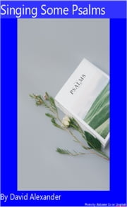

|
|
|
|
|
091至高天上耶稣座位
1.至高天上耶稣座位，天军天使服事拜跪，
面发荣光，冕旒灿烂，褔气齐全，权柄无限。 2.天地万物未有之际，真神，圣子同在一起， 全能主宰永生之道，天地万物是祂创造。 3.万民违逆真神法度，应下地狱，别无生路， 真神不忍我众沉沦，差遣耶稣拯救灵魂。 4.耶稣降生救苦治伤，品行纯全，作我榜样， 显明神迹传扬真道，替人受死建立功劳。 5.受死复活，救赎功成 ，表明罪债，一次偿清， 教导门徒，暂居世间，然后升天执掌王权。 6.直到末日，天门开阔，耶稣降临，叫人复活， 世上人类受衪审判，报应不爽，罚恶赏善。 |
|
https://www.mred365.cn/szxg/7094.html
|
|
|
|
|

LX1811
In Highest Heaven Jesus
Reigns
091至高天上耶稣座位
同年3月，杜嘉德与宾威廉（《天路历程》的汉译者）同往香港，再转上海，在旅途中，杜得到这位属灵前辈的指导，使其受益匪浅。6月，杜嘉德到达厦门，开始其在闽南地区的宣教生涯。
要想在厦门做好福音事工，宣教士必须精通当地语言。杜嘉德抄录学习卢壹所编的《厦门语字汇》，又向罗啻等宣教士请教。由于他颇有语言天赋，又能刻苦学习，所以很快就能讲一口标准流利的闽南语。杜嘉德在厦门时，牧养教会、教导学生，还经常不畏寒暑外出旅行布道，有时乘看月夜赶路，动辄数十里。即使在休假期间，他为了完成《厦英大辞典》的编撰，每天至少有八小时花在上面。因而其面貌较其实际年龄苍老。
1856年，他萌发了到安海宣教的想法。他认为安海地理位置极为重要，“据兴、泉、永出口要津”，“欲入内地非从安海不可。”于是，他从厦门乘“福音船”前往安海布道。据《安海教会150专刊》记载：“福音初入安海，当地士绅极力抵制，起初禁止民众租赁房屋给牧师，继而禁止民众与之交往，终且扬沙掷石，甚至全镇二十四境士绅演戏宣示公禁、阻止传道.尽管阻力重重，杜嘉德牧师还是忍辱负重，锲而不舍地进行传播福音，终于在咸德境向黄姓居地租得一房舍作为讲堂，后因数次被人纵火捣毁而迁租玄坛宫后蔡宅书塾。至1860年才有郑爽(安海更夫鸦片仙)、其弟郑垣及施洗、吴江、陈强(戏班吹手)等贫寒者蒙圣灵感化，相继受洗，同心归主。郑爽后来终身事主，历任执事、长老及传道。当时，信徒虽然寥若晨星，但是星星之光，普照他人。福音在安海传播，虽遭受种种拦阻，但靠着神的大能，终于在安海扎下了根，建立了泉州地区第一个堂会(继厦门新街堂,为闽南的第二个堂会)，并以此为据点，于1866年将福音传入泉州，后又发展到安溪、永春、南安和德化等地。”此外，杜嘉德还在漳州龙海等地宣教，为福音在漳州地区的传播做出了贡献。
1860年，杜嘉德由厦门渡海到台湾访问。他发现台湾人大都能讲闽南语，感到非常意外与兴奋，他在日记上写道：“我们于9月19日离厦门，24日安抵本港(淡水)。......这巿镇有疏疏落落的几条长街，居民或有四五千人，确数多少，在短短几天的访问中，很难作正确的估计。我们还访问过附近唯一的大巿镇艋舺。......整个地区为福建漳、厦一带所迁来的移民，说的也是闽南话，而台湾全岛也以闽南话为普遍。......这是一个不平常的现象——跨过海峡，这里仍旧通行着同样的语言；在中国大陆，隔了一百哩，就使我们觉得言语不通了。因此，我们耳中似乎听到一种强烈的呼召：‘到这里来帮助我们’，直到上帝的福音在这里发扬光大起来。”（据：董显光著：《基督教在台湾的发展》）此后，杜嘉德多次写信给差会，要求派宣教士到台湾。经过他的报导与呼吁，几年之后，苏格兰长老会差派了马雅各医生到台宣教，他以台南为中心，展开医疗与布道工作。在最初的几个月里，杜嘉德前往台湾，协助马雅各筚路蓝缕，渡过艰苦的创业时期，使福音在台湾扎根。
杜嘉德在厦门编撰了《厦英大辞典》（一名《厦门音汉英大辞典》）。为了编撰《辞典》杜嘉德广泛收集闽南土话，每当他听到一个新的词汇，他一定立刻记在笔记本上，反复加以练习，直到能够纯熟掌握为止。厦门的三公会为了使《辞典》早日完成，派伦敦会的施约翰以及美归正会的打马字协助杜工作。经过不懈的努力，《厦英大辞典》终于在1873年问世。此书是第一部厦门腔白话华英辞典。一出版立即成为所有学习闽南语者的必备书。书的特色是全书无汉字，只用罗马拼音。序文里杜嘉德说到，一者因为很多字找不出适当汉字。二者要利用假期在英国排印无法印出汉字。三者因他无法抽出时间在外埠（如上海）监印而作罢。由于杜嘉德在闽南地区宣教多年，熟悉不同地区的闽南话，因此书中指出了泉州话、漳州话与厦门话的差别。
1877年5月，来华的宣教土们在上海召开第一次不分宗派的福音会议，杜嘉德当选为英国教会主席。他在会上对几十年来的宣教工作进行了反思，他认为“目前在中国传福音的方式不当，有待各差会进一步努力与更有系统之合作，以便使福音能够遍传中国。”他希望宣教士能吸取历史教训，不要再成为缺乏训练与盲目行动的乌合之众，更不可互相嫉妒与倾轧。他强调来华宣教士的素质必须是第一流的，因为中国拥有博大精深的传统文化，而中国人也是非基督教文明中最精明、最勤奋、教化最深、能力最强的民族。杜嘉德的想法，真让我们这些华人基督徒引以为豪而又深感任重道远啊！
从上海回来后不久，杜嘉德染上霍乱。7月26日那天，从清晨开始，就腹泻不止。到了中午，他已病入膏肓，医生束手无策，安慰他说：“不要太激动，你是个哲学家。”杜嘉德坚定地回答道：“不，我是个基督徒，”然后他重重的喘了一口气，接看说：“在这时刻，基督徒要比哲学家好得多。”过了一会儿，他对一旁正在悲伤的信徒们安慰到“惟有神的恩赐，在我们主基督耶稣里，乃是永生。”（罗：6：23）下午5点多，47岁的杜嘉德结束了在世上的所有劳苦，安息在主的怀抱中。为了纪念杜嘉德为教会的贡献，教会在鼓浪屿鸡母山一带建立了杜嘉德纪念堂。

19th century Protestant missionaries from the UK and the USA established churches, schools and hospitals in Xiamen, China, where the colloquial language is known as "Amoy." Hymns written for use there followed the spread of Amoy speaking peoples and their churches. In the 20th century, when churches in Taiwan began to publish their own hymn collections (rather than import them from China), these hymns were included.In the 21st century were some of these were translated into English for use by international students at Tainan Theological College and Seminary in Taiwan. This collection also includes a few selections that were never adopted in Taiwan, and some others that weree never adopted in Xiamen. which the 1964 committee didn't use. Some missionaries expelled from Xiamen in the 1950s ministered amongto Amoy speaking Christians in the Philippines. The Amoy Hymnal was re-edited and re-issued there. It is still in use by some congregations in Xiamen in the 21st Century.
“Singing With and Singing From”


